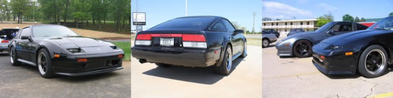

-
I'm not heating and moving it that's for sure!Ford Falcon wrote: . Do you think it's possible to heat up and adjust the mounting points on those so the struts will line up properly? I would imagine it would be expensive to do. Also, are you all using Z32 rear struts with this mod, or has anyone found any others that with work with the mounting point on this knuckle?
Pretty sure everyone is using s13 coilovers
and if utilizing the z32 uprights then you would just need z32 lower mounts
on the s13 coilovers
The easiest would be s13 uprights and s13 coilover/shocks.Praying.... -
Ahh you just missed a ebay member that sold the knuckles for $20.50.
I believe ken az used a angle metal piece up top to adjust for the angle, but, he was using the z32 subframe.
I have not had a chance to put the z32 knuckles on the Z yet( too much snow to move the car to the shop) and I'm waiting for the z32 rear brakes to come in to finish it up!88na2T-s13,q45 swap 12.6@110mph
87T 2+2 auto,stock -
Coilovers are a li'l expensive for me right now. I'll just go with a pair of basic Tokico rear S13 struts and shocks mounted to Z32 knuckles. It'll be another month before I get underway. Hope to add some of my own pics.
Right now I'm just cleaning out the underbody. Stripping away all the sound deadening rubber and grime, back to the metal, then I'll get all the welding done and prep it right.My Project '88 Z31 To Do List:
S13 rear subframe,
'91 Q45 R200 diff,
'91 Infiniti VH45DE,
Z33 6-speed transmission
Custom wire harness
-
I just read this whole thread. Im wondering what the point is to change the subframe? Just for suspension reasons?89' Turbo-R.I.P. (scrapped)
87' NA all parts swapped from 89', Stance, 3.3 long block, hx35w, Injector Dynamics 1000cc, isky cams, pathfinder intake, front mount, megasquirt v3.57 w/MS3X
07 Frontier XE <----(turd) daily -
Geometry, among some other smaller pros.1985 NA2T(now RB) * 1988 SS x2 * 1984 AE x3 * 2006 350Z
 -
Being able to not have -6* of camber when you get to proper ride height, if you're into that sorta thing.

1988 300zxt. gt35, stance, etc. Wheels: Varrstoen ES2 18x9.5 et-13 225/40. 18x10.5 et0 245/40
1990 jetta vr6'd -
For the basic reason that the front suspension on our cars is reasonably good, yet the rear is a antiquated, cheap design.
-Multi-link distributes less un-dampened shocks to the chassis. Results in a more comfy ride, especially when upgraded.
-Many aftermarket upgrades fit it and are plentiful.
-Subframe has an extra mounting point.
-Much better alignment. Car no longer looks like dog taking a dump.
-I've never weighed them, but I would guess Z31 is heavier.sigpic -
I figured it was because theres always so much camber and the fact that theres a wide selection of suspension for the 240's89' Turbo-R.I.P. (scrapped)
87' NA all parts swapped from 89', Stance, 3.3 long block, hx35w, Injector Dynamics 1000cc, isky cams, pathfinder intake, front mount, megasquirt v3.57 w/MS3X
07 Frontier XE <----(turd) daily -
I did it mainly for the driveline. everything else made it an easier decision.
Praying.... -
So let me get this straight, after getting the actual s13 subframe welded up you will need, a new drive shaft, figure something out for the exhausts and e brake, and s13 springs and shocks if i didint go right to the stance/serial 9 set up? Anything im missing? I have 4 lug currently so i would imagine i could keep the s13 hubs -
S13 has coilovers, your choice to use either 4/5 lug, and there is nothing you have to weld on the s13 frame you have to box in the places you have to cut out to make the s13 frame clear on the Zed, and yes driveshaft because of the short nose diff!joeyz31na wrote: So let me get this straight, after getting the actual s13 subframe welded up you will need, a new drive shaft, figure something out for the exhausts and e brake, and s13 springs and shocks if i didint go right to the stance/serial 9 set up? Anything im missing? I have 4 lug currently so i would imagine i could keep the s13 hubs88na2T-s13,q45 swap 12.6@110mph
87T 2+2 auto,stock -
You may need a half moon style aftermarket RUCA to clear your suspension. Depending on what you use and how you mount everything, it may rub. You'll probly want to adjust camber anyway when you slam it.sigpic -
[quote]DMANN wrote:I thought the front mounts on the S13 didn't quite go far enough forward, so you had to make new front mounts on the subframe?Originally posted by joeyz31na
Kevin A 1986 RB20 300xz 2+2
1986 RB20 300xz 2+2 -
Correct, many ways to do it.
Use one of the methods described in this thread or use the imagination!88na2T-s13,q45 swap 12.6@110mph
87T 2+2 auto,stock -
Well, it's been 6 months since we saw any activity on this thread. So this weekend I'm going to get a couple of quotes to get the parts fabricated and the welding work started on my swap. I've got an S13 rear sub-frame, the fuel tank is out, and I'm making sure the areas to be worked on are free of any dirt, and such. I'll be sure to get some photos up here when its done. Finally moving forward on this thing.My Project '88 Z31 To Do List:
S13 rear subframe,
'91 Q45 R200 diff,
'91 Infiniti VH45DE,
Z33 6-speed transmission
Custom wire harness

Copyright © 2006–. All rights reserved. Privacy Policy